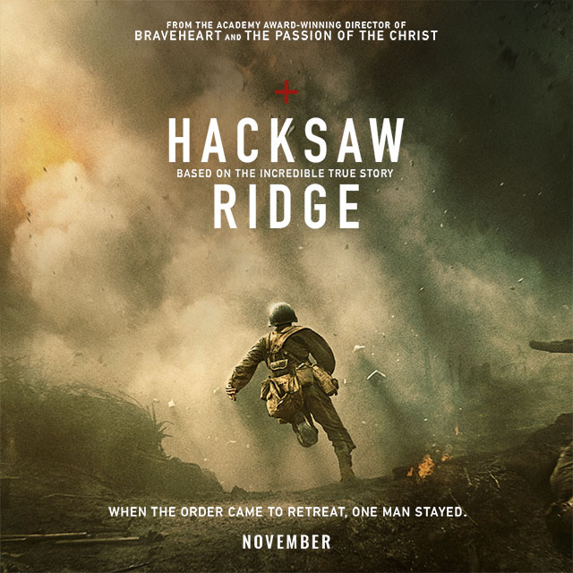

Hacksaw Ridge (2016)
Regisseur: Mel Gibson
Duur: 139 minuten
Verhaal
{kind=link}
Desmond T. Doss groeit op in een dorpje aan de Blue Ridge Mountains in Virginia. In zijn jeugd komt
hij
meermaals in contact met geweld. Zo probeert hij zijn moeder te beschermen van zijn vader, die een
agressieve dronkaard is. Op een dag raakt hij verwikkeld in een gevecht met zijn eigen broer. Hij
haalt
uit met een steen, waarna hij verteerd wordt door droefheid.
Als jongeman besluit Desmond om zijn land te dienen tijdens de Tweede Wereldoorlog. Hij wordt
gedreven
door patriottisme, maar evenzeer door pacifisme. Desmond is een Zevendedagsadventist die in zijn
eigen
familie al genoeg geweld gezien heeft. Hij wil zijn land dienen als hospik. Tijdens zijn militaire
opleiding weigert hij dan ook om een wapen te dragen.
Zijn vaderlandsliefde en pacifisme zorgen voor een tegenstrijdigheid die tijdens zijn opleiding niet
geaccepteerd wordt door zijn medesoldaten en officieren. Hij wordt beschouwd als een lafaard en
uitgelachen om zijn gebrekkige fysiek. Het Amerikaans leger dreigt om de dienstweigeraar voor de
krijgsraad te slepen.
Uiteindelijk mag Desmond toch deelnemen aan de oorlog. In 1945 belandt hij in de Slag om Okinawa. Op
het
Japanse eiland is hij betrokken bij de strijd om Hacksaw Ridge, een gebied dat bovenaan een steile
klif
ligt. Desmond werpt zich op als een echte held. Als hospik zet hij meermaals zijn eigen leven op het
spel om zijn medesoldaten te verzorgen of van morfine te voorzien. Uiteindelijk vindt hij ook een
manier
om zijn landgenoten uit de gevarenzone te loodsen.
De film eindigt met archiefbeelden van de echte Desmond T. Doss.
Cast
| Acteur | Rol |
|---|---|
| Andrew Garfield | Desmond T. Doss |
| Teresa Palmer | Dorothy Schutte |
| Luke Bracy | Smitty |
| Sam Worthington | Capt. Glover |
| Hugo Weaving | Tom Doss |
| Vince Vaughn | Sgt. Howell |